|
Calculus - Limit Home : www.sharetechnote.com |
|
This is about a concept which is almost the first concept you would face when you learn Calculus. It is about Limit which almost everybody including me so often get confused with. (So don't worry if you get confused or have difficulties understanding clearly. It is not only you -:)
Let's assume that we have a function as shown below.
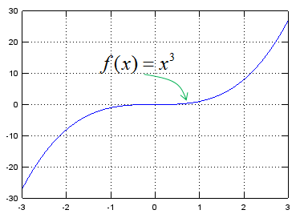
Now you are asked to draw an answer to following question.
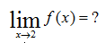
First you have to understand the meaning of each symbol. The meaning of this symbol and expression is as shown below.
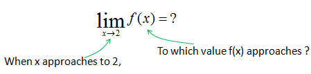
Do you understand what it means ? As you see, 'Limit' is a symbol to show that a variable 'approach' to a certain value. It does not mean that a variable is 'equal' to a certain value. The important thing is to understand the differences between 'approach' and 'equal'. When we say 'equal', it means that we can pick a specific number for the variable, but when we say 'approach', it means that we know it is getting closer to a specific number but we cannot pick any specific value for it. So when we use 'Limit', we don't know what is the exact value for the variable (x in this example) and in return we don't know what is the result of a function (f(x) in this example), but we know that as the variable approaches to a certain value, the f(x) approaches to a certain value.
Look at the following table, if you see the colum x you will notice that it is getting closer to the value 2. In this table, the last value is 1.999997 but this does not mean that it ends there. You can keep continuing the table to infinite length like 1.999997, 1.9999997, 1.999999, 1.9999999 you can not specify any end specific end value (this is a concept which makes almost everybody feel very uncomfortable). Now let's look at f(x) column. How the value changes ? It is approaching to a certain value (it is 8 in this case), but it does not have any specific end value as I described above.
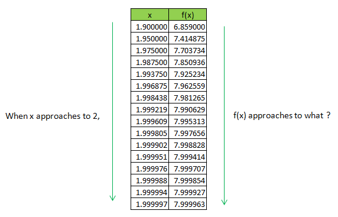
Look at the following table, if you see the colum x you will notice that it is getting closer to the value 2. In this table, the last value is 2.00003 but this does not mean that it ends there. You can keep continuing the table to infinite length like 2.000003, 2.0000003, 2.0000002, 2.0000001 you can not specify any end specific end value (this is a concept which makes almost everybody feel very uncomfortable). Now let's look at f(x) column. How the value changes ? It is approaching to a certain value (it is 8 in this case), but it does not have any specific end value as I described above.
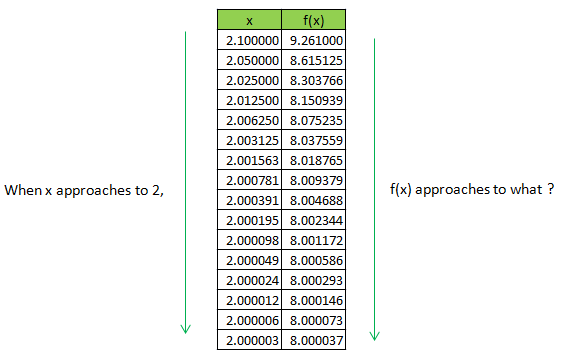
If I illustrate this example (and concept of Limit) in a graph, it could be as follows. The arrow is to indicate 'something is getting closer (approaches) to a certain destination, but it never arrives to the destination'.
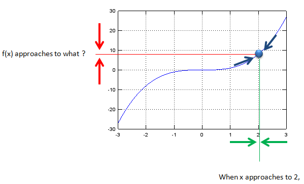
Let's look at another example as shown below.
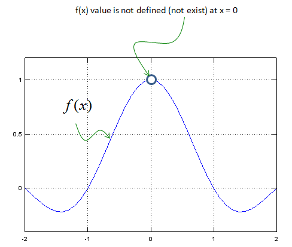
What is the answer to following question ? 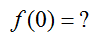 It does not have answer because the function is not defined (does not have corresponding value) for x = 0.
Then can you get the answer to the following question ?
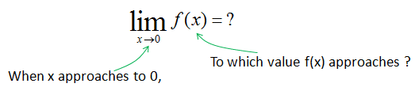
Just by looking at the graph, you will notice that as x approaches to 0, f(x) approaches to 1.
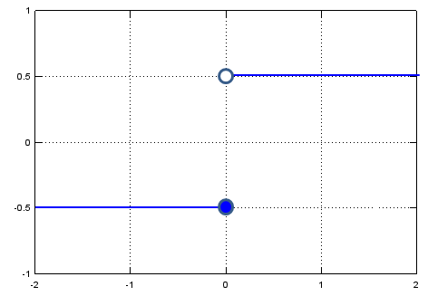
What is the answer to the following question ?
By looking at the graph, you would notice f(x) is -0.5. Then what is the answer to following question ?
Now you would have problem, because you would get different answers depending on which direction you are getting closer to the specified point(x = 0 in this case). Therefore, there is no answer to this question.
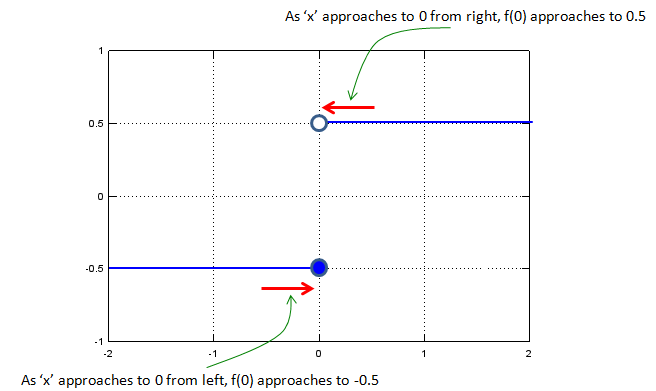
For this kind of situation, they came up with a little bit modified symbol as shown below. We put small sign symbol (+ or -) right next to the value to indicate the direction we have to approach.
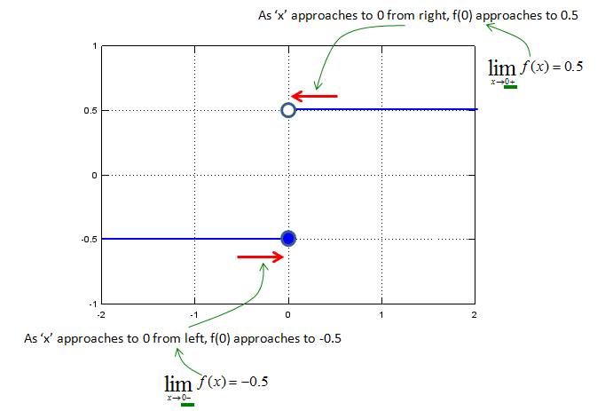
What if we deal with multi variable function as shown below ? (It has two variables x and y). Like the single variable case that we saw above, we can think of a situation where two variables approaches to specific values. Following is an example.
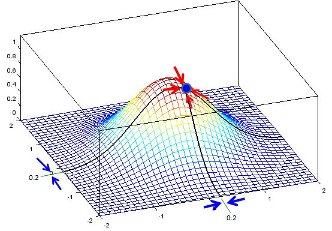
You can express this situation in mathematical form as shown below. I would not ask you to come out with answers.. but I think you already understand the basic concept for the limit of multi variable function.
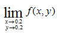
If you are OK with what I described above and it is too simple for you, check if you can still understand the meaning of the limit when the function is a complex variable function or vector function. I would not come back this topic right away, but in real engineering you would see more of the case for complex function or vector functions. (I will come back to this topic, when I complete all the basic pages).
|
st